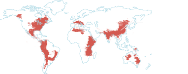

스크롤을 내려주세요
기후변화로 발생하는 자연재해. 어린이들은 내일 더 심각한 홍수와 태풍을 견뎌야 합니다.
"어느날 갑자기 집이 사라졌어요."
© UNICEF/UNI93698/Ramoneda

연간 119km/h 이상의
대형 태풍 47개 발생
홍수 피해 어린이 5억 3,000만 명
어린이 1억 명 이상이 살고 있는 열대 지역에는
매년 수십 개의 태풍이 발생합니다. 그리고 전 세계 어린이 3명 중 1명은
홍수가 매년 27회 이상 발생하는 지역에 살고 있습니다.
출처: WRI(World Resources Institute) Aqueduct

"물이 발목까지 차오르는 길을 걸어야 해요."
© UNICEF/UNI144294/Zaidi

기상 재해로 발생하는
난민의 99%는
홍수와 태풍이 원인
작년 한 해 홍수와 태풍으로 인한 난민 1,460만 명이 발생하였습니다.
기상 재해로 난민이 된 어린이들은 깨끗한 물을 마시지 못하고,
수인성 질병에 쉽게 노출되기 때문에 기상 재해는 개발도상국
5세 미만 어린이들의 주요 사망 원인으로 꼽힙니다.
"물 속은 정말 깜깜해요. 너무 추워요."
© UNICEF/UNI99240/Dormino

차가운 물과 어둠
어린이들에게 남겨진
트라우마
홍수와 태풍 피해를 입은 어린이 5명 중 1명은 물에 대한 공포와
자연재해에 대한 두려움으로 극심한 트라우마를 겪습니다. 트라우마로
어린이가 겪는 고통은 어른보다 2~3배 더 강하고 오래 지속됩니다.
-
눈 앞에서 거대한 물이 덮혀
그 모습이 오래 기억남아
평생 불안감 속에 살아야 합니다.
어린이 혼자서는
이 홍수와 태풍을 이겨낼 수 없습니다.
유니세프는 아이들 편입니다.
-
- 72시간 내 대응합니다
- 홍수와 태풍은 신속한 대응이 필요합니다. 유니세프는 코펜하겐, 상하이, 두바이, 파나마에 물류센터를 배치해 긴급구호 물품을 전 세계 어디서나 빠르게 공급받을 수 있도록 전략적으로 분산 및 비축하고 있습니다.
-
- 어린이가 있는 곳 어디에나 있습니다
- 가뭄은 종교, 국적, 인종을 뛰어 넘어 전 세계적으로 발생하고 있는 문제입니다. 유니세프는 190여 개 국가사무소에서 직접 피해 어린이의 생명을 구하는 구호활동을 펼치고 있습니다.
-
- 규모 있는 대응을 진행합니다
- 기후변화는 장기적으로 해결해야 할 문제입니다. 유니세프는 국제 구호단체들의 조정 기관인 IASC의 영양, 식수/위생, 어린이 보호 분야의 리더로서 도움이 필요한 어린이가 있는 현장의 지휘관 역할을 합니다.
-
- 전문적으로 접근합니다
- 기후변화로 발생하는 자연재해는 근본적인 원인을 파악하고 해결할 수 있는 역량이 필요합니다. 유니세프는 독립된 리서치 센터를 통해 기후변화가 어린이에게 미치는 영향을 연구하며 정부와 국제협력을 통해 개선해 나갑니다.
홍수와 태풍으로 고통 받는 아이들에겐
바로 오늘 도움이 필요합니다.